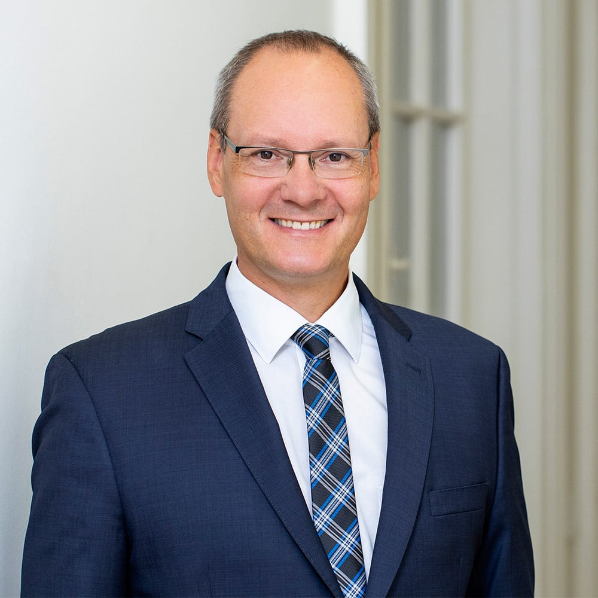
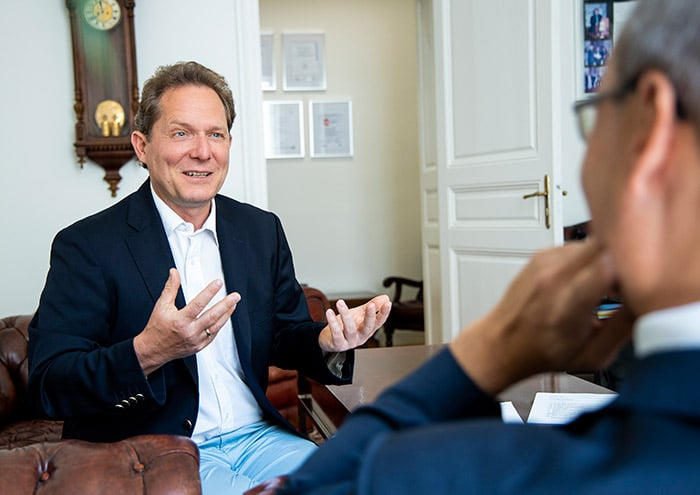

Die Expertise spricht für MBU Controlling: Martin Buchegger war jahrelang in der Unternehmensrestrukturierung, als Fachhochschullektor und Gerichtssachverständiger tätig. Er hat bereits mehr als 100 Unternehmen erfolgreich begleitet. Integrierte Unternehmensplanung, Controlling und Risikomanagement gehören zu seinen Fachgebieten. Die angewandte Methodik basiert auf bewährten Softwarelösungen wie BusinessPlanner und Strategie-Navigator von der Future Value Group AG. Martin Buchegger bringt zudem seine mehr als 10 Jahre Bankerfahrung ein und unterstützt Sie bei Ihren Finanzierungsgesprächen.

Copyright: feelimage / Matern
Copyright: feelimage / Matern
Mag. Martin Buchegger, MBA
Aus- und Fortbildung
Aus- und Fortbildung
- 2002 Abschluss des Studium der Betriebswirtschaft an der WU-Wien
- 2009 Beeidigung zum gerichtlich zertifizierten Sachverständigen
- 2010 Abschluss des Executive MBA an der Imadec Privatuniversität
- 2021 Zertifizierter Senior Risk Manager
- 1996 – 2002 Unternehmensberater und Geschäftsführer LBG Consulting
- 2002 – 2009 Unternehmensanalyst in der Restrukturierung der Bank Austria
- 2009 – 2015 Unternehmensberater und Geschäftsführer TPA Horwath
- Seit 2009 Geschäftsführer MBU Consulting GmbH & Co KG
- Interims CFO einer Beteiligungsholding
- Financial Controller im Sanierungsverfahren
- Externer CFO für Unternehmen diverser Branchen
- 2011 – 2017 Lektor für Integrierte Unternehmensplanung FH-Wien der WKW
- Seit 2020 Nb. Lehrender für Unternehmensbewertung IMC FH-Krems
Partner
- Steuerberatung, Wirtschaftsprüfung · Interfides
- Unternehmensberatung – Mag. Peter Voithofer
- Businesscoach · Kourosh Ghaffari – GBCC
- Rechtsanwalt · RA Dr. Michael Lesigang
- Planungssoftware · BusinessPlanner
- Simulationssoftware · Future Value Group AG

Copyright: feelimage / Matern
Copyright: feelimage / Matern